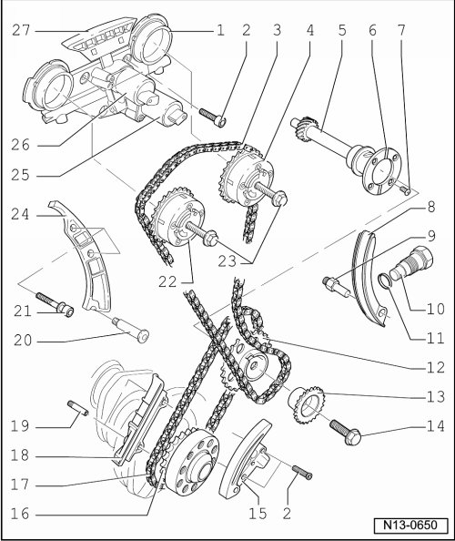
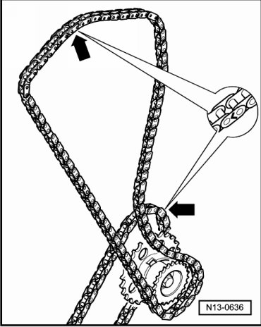

Camshaft Gear/Sprocket: Specifications
Camshaft Timing Chains, Assembly Overview

1 Control housing
2 8 Nm
3 Camshaft roller chain
4 Exhaust camshaft adjuster
• Identification: 32A
5 Intermediate shaft
6 Thrust washer
• Not installed on all engines
7 8 Nm
8 Tensioning rail
• For camshaft roller chain --> [ (Item 3) Camshaft roller chain ]
9 Pivot pin, 18 Nm
• For tensioning track --> [ (Item 8) Tensioning rail ]
10 Chain tensioner, 40 Nm
• For camshaft roller chain --> [ (Item 3) Camshaft roller chain ]
11 Seal
12 Chain sprocket
• For roller chain --> [ (Item 17) Roller chain ]
13 Chain sprocket
• For camshaft roller chain --> [ (Item 3) Camshaft roller chain ]
14 60 Nm + 1/4 turn (90°)
15 Chain tensioner with tensioning rail
• For roller chain --> [ (Item 17) Roller chain ]
16 Drive gear
• Integral part of crankshaft
17 Roller chain
18 Guide rail
• For roller chain --> [ (Item 17) Roller chain ]
19 Locating pin without collar, 10 Nm
• For guide rail--> [ (Item 18) Guide rail ]
20 18 Nm
21 23 Nm
22 Intake camshaft adjuster
• Identification: 24E
23 60 Nm + 1/4 turn (90°)
24 Guide rail
• For camshaft roller chain --> [ (Item 3) Camshaft roller chain ]
25 Camshaft adjustment valve 1 (exhaust) (N318)
• For exhaust camshaft
26 Camshaft adjustment valve 1 (N205)
• For intake camshaft
27 Guide rail
• For camshaft roller chain --> [ (Item 3) Camshaft roller chain ]
• Clipped in at control housing
Roller Chain, Marking

- Mark roller chains before removing (e.g. with paint, arrow pointing in direction of rotation).
• Do not mark chain using a center punch or similar means!